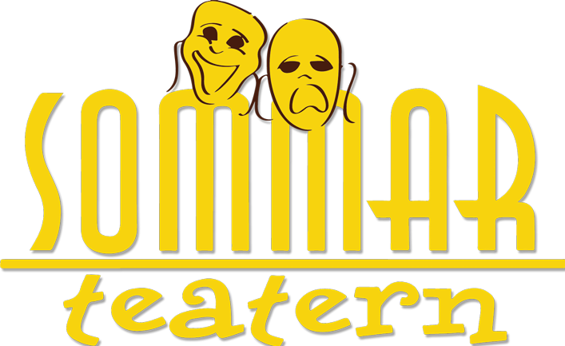

Sommarteatern Ystad
Sommarteatern Ystad är en professionell utomhusteater som varje sommar sätter upp nya föreställningar i Öja, mitt utanför Ystad. Föreningshuset fungerar bland annat som replokal och kontor för verksamheten.
Besök deras hemsida →